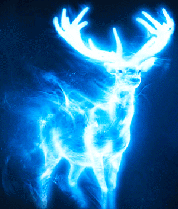

This ancient and mysterious charm conjures a magical guardian, a projection of all your most positive feelings.
The Patronus Charm is difficult, and many witches and wizards are unable to produce a full, corporeal Patronus, a guardian which generally takes the shape of the animal with whom they share the deepest affinity. You may suspect, but you will never truly know what form your Patronus will take until you succeed in conjuring it."
A corporeal Patronus is one that is fully-formed, taking the shape of bright-white, translucent animal. The specific animal forms that corporeal Patronuses take vary from person to person and reflect each individual's innermost personality. Many will be tested on their affinity with the spell in their 3rd year
